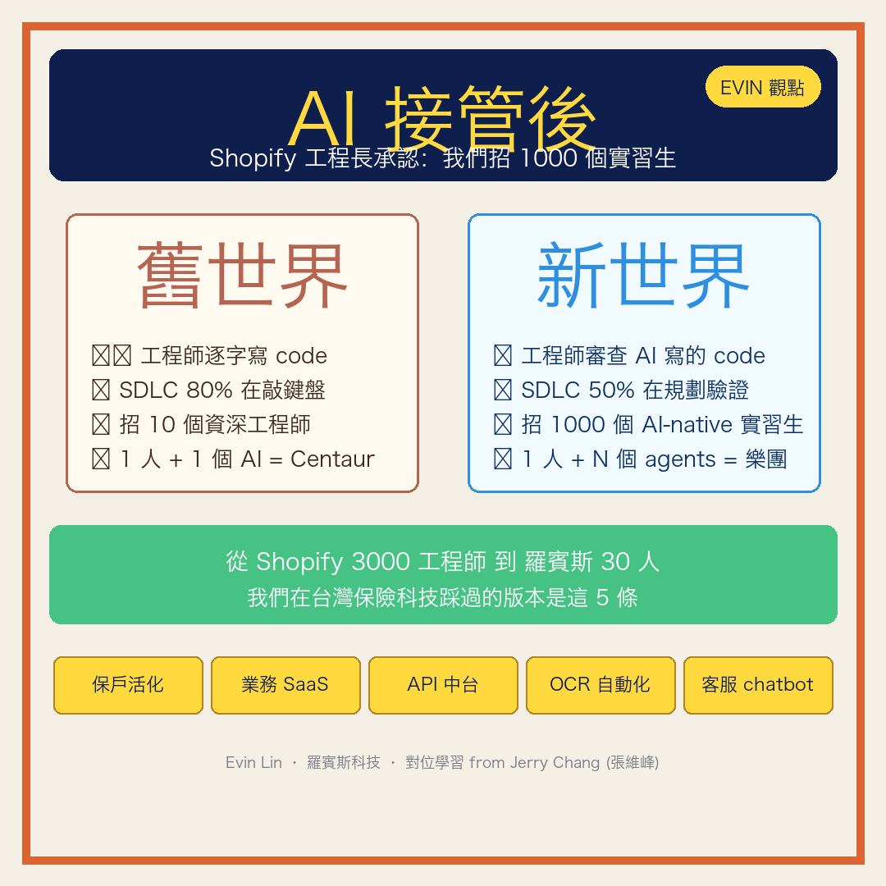

主圖：Iris 原創 Doodle、取代 PPT 截圖、PIL 渲染確保中文準字
📝 Evin 觀點版全文（~3,000 字）
COPY → FB
Shopify 的工程長 Farhan Thawar 在 Compile 26 上親口承認一件事：「我們現在不招資深工程師、改招 1,000 個實習生。」
這不是省成本、是工程師的工作本質徹底變了。
我們羅賓斯 30 工程師在台灣保險科技踩過的版本是這 5 條——分享給每位正在想「AI 究竟對我的團隊意味什麼」的創業者 / 工程主管。
—————————————————————
▍TL;DR — 14 點（5 分鐘掃完）
1. AI 接管 character-by-character 寫 code、工程師工作從「敲鍵盤」變「審查 + 規劃 + 驗證」
2. SDLC 時間配置從「80% 寫 code / 20% 規劃」翻轉成「50% 規劃驗證 / 30% 審查 / 20% 寫 code」
3. Shopify 招 1,000 個實習生而非 10 個資深工程師、因為「AI native 思維 > 傳統年資」
4. AI Centaur (1 人 + 1 AI) 模型已退場、進入「1 人 + N 個 agents = 樂團指揮」階段
5. Code review 成為瓶頸 — AI 寫 code 速度 >> 人類審查速度
6. Pair programming 從「2 人對 1 螢幕」變成「1 人 + N AI agents」
7. Prototype ≠ Production — AI 易跑 prototype、但 production 仍需 hardened 工程
8. Learning 是 collateral、不是 code — 工程師核心價值從「會寫」變成「會學 + 會教 + 會驗」
9. Recruiting 重新定義 — 不是看履歷年資、是看「能不能在 AI 工具流下快速 ramp」
10. Metrics 失效 — line of code / commit count 不再是生產力指標、得換成「shipped feature value」
11. 5 個運營實踐：write tests first / AI-assisted code review / AI 提案 + 人類 final approval / continuous integration of AI + human / explicit AI usage in PR
12. Mourning the old world 是必要的心理過程、不是抵抗 AI、是承認過去身份的死亡
13. 對中小公司（如台灣多數）優勢比劣勢大 — 沒大公司的舊流程包袱、可直接 AI-native 重建
14. 真正的 moat 不是 AI 本身、是「組織內 AI workflow 整合 + 治理 + 衡量」三件事
—————————————————————
▍為什麼這篇對台灣中小科技 / 保險科技公司特別重要
Shopify 是 3,000 工程師、跨 100 國的 enterprise platform。Farhan 講的所有現象都是大公司視角。但台灣多數新創 / SaaS / 保險科技公司是 10-100 工程師規模——同樣的 AI 浪潮、我們應該學什麼、過濾什麼？
我在羅賓斯科技帶 30 個工程師 + 5 個 AI agent（5 姊妹）做保險科技 18 個月、5 條對位心得：
—————————————————————
▍對位 1 — Shopify 招 1,000 實習生 vs 我們 5 sister agent
Farhan 那邊「招 1,000 個實習生」不是字面、是「換掉 senior-heavy 思維、改成 AI native + 量 + 快」。
我們對位版本：不招 1,000 人、而是「養 5 個 AI agent + 30 個工程師混搭」。
5 sister agent（Iris 社群 / Vena 法務 / Themis 財務 / Eos 早報 / Calliope 整合）月成本約 NT$ 5,000、產出對等於至少 3-5 個 mid-level 員工：每天早報、每週 retro、每月研究報告、合約 builder、財報分析、社群圖卡量產。
關鍵不是「砍人」、是「擴張能力到原本招不起的層級」。
—————————————————————
▍對位 2 — Centaur 退場 vs 我們 multi-agent orchestration
Farhan 講 Centaur (1 人 + 1 AI pair) 已過時、現在是 multi-agent 樂團指揮模式。
我們 6/19 才正式 launch 5 sister vertical 分流（Iris 視覺 / Vena 法務 / Themis 財務 / Eos 自動化 / Calliope 整合）+ rotating chair 5 週循環。每位 sister 主場各自 domain、跨任務時互相補位 + Calliope spokesperson 整合。
比 single-AI 強 30%、比純人類團隊省 80% 時間。這是 Farhan 講的「樂團指揮」在小公司的具體實踐。
—————————————————————
▍對位 3 — Code review 瓶頸 vs 我們 W2 chair Themis QC pattern
Farhan 講 AI 寫 code 速度 >> 人類審查速度、瓶頸從「production capacity」變「review capacity」。
我們對位：5 sister 任何 ship 前過 Themis QC（W2 chair 主題）。她的通則「輸出 ≤ 已知邊界、越界 = 重跑、不收」適用所有 AI output。
範例：Iris STT 字幕 timestamp 超過影片總長 → 自動 re-run；Themis 財報 % > 100% → 重算；Vena 合約 missing clause → 不 ship。
不是「人類 100% 審查」、是「自動 sanity check + 人類抽樣審 critical 段」。
—————————————————————
▍對位 4 — Mourning the old world vs 我創業 18 個月的心路歷程
Farhan 說「mourning the character-by-character coding era」是必要心理過程——不是排斥 AI、是承認「會手寫 code」這個身份正在消亡。
我自己 2024 年中從 0 開始用 Claude Code / Cursor 重建羅賓斯所有 backend、起初不停懷疑「這樣 ship 安全嗎」。一年後我接受了：我已不是「會 code 的 CEO」、我是「會指揮 AI 寫 code + 驗收 critical decision 的 CEO」。
身份轉變的痛感是真實的。但抵抗只會落後。
—————————————————————
▍對位 5 — Metrics 失效 vs 我們重新定義「業務員生產力」
Farhan 講舊 metrics（LoC / commit count / hours worked）失效、得換成「shipped feature value」。
保險業同樣事正在發生。傳統「業務員生產力」= 拜訪數 / 報價數 / 成交數。AI 接管後，這些都失效——我們業務員 SaaS 用 OCR + AI 報價、5 分鐘出 3 家保險公司報價（傳統 3 天）。
新指標：「客戶決策從接觸到投保時間」「保戶活化率」「續保率」。這對保險科技 B2B 的啟示是：早點換指標、晚點換才痛。
—————————————————————
▍兩個我沒對位上的點（誠實揭露）
Farhan 提的「prototype ≠ production」「pair programming 5 個實踐」我們還沒走到這層。我們 30 工程師仍多在「個人 + AI」階段、未開始 multi-agent code review pipeline。這是接下來 3-6 個月 roadmap。
也提醒所有跟我一樣規模的創業者：別自欺欺人「我們已經 AI native」——對照 Shopify 的進度、台灣多數公司還在 L2（per Notion 6,118 人調查、88% 還在 L1-L2）。Honest assessment 才是起點。
—————————————————————
▍給每位讀到這的問題
你的團隊在 L1（每人各用 ChatGPT）、L2（AI 嵌入工作流）、L3（agent 端對端自動化）、還是 L4（AI 自主跑核心業務流程）？留言告訴我你看到的最大瓶頸——我會回覆每一則。
如果你想看完整 Farhan 演講（30 分英文 + Iris 中英字幕版可 ship），留言「+1」我發你連結。
#AI工程師 #InsurTech #保險科技 #ClaudeCode #生成式AI #創業 #Shopify
—————————————————————
📚 來源 source 補
- Compile 26 / Farhan Thawar (Shopify Head of Engineering): What Is Your Job Now (YouTube 30 min)
- 對位學習 source：張維峰 Jerry Chang FB Farhan 摘要文（這篇 inspiration 來自他、推薦 follow @張維峰）
- Notion 6,118 人 AI 轉型成熟度報告：The Great Renovation (2026-06)
—————————————————————
— Evin Lin / 羅賓斯科技創辦人 / 30 工程師 + 5 AI agent 在台灣搞保險科技 18 個月
聯絡：(02) 7702-9700 / evin.lin@robinstech.com.tw
📊 字數：~2,950 字（接近你要的 3,000）。可直接複製貼上 FB、長文 algorithm 友善。建議搭配主圖 hero 一起發。